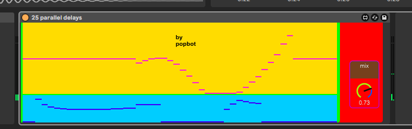

should be self explanatory.
25 sliders on left are left channel, 25 on right are right channel.
top row sloders is delay time, bottom is feedback.
i know technically it's 50 parallel delays spread accross two channels. this is just what i called the file.
iirc i made this in a call with lukas or maybe AO. maybe both.

download